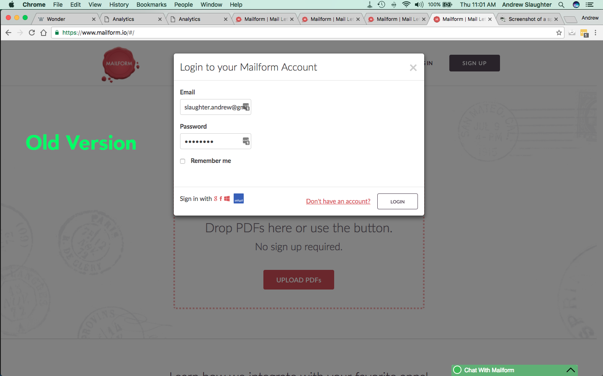
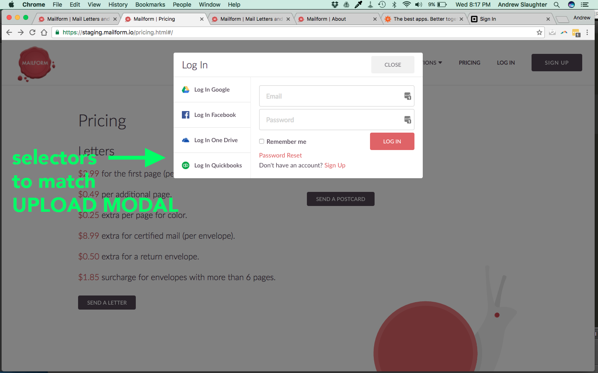
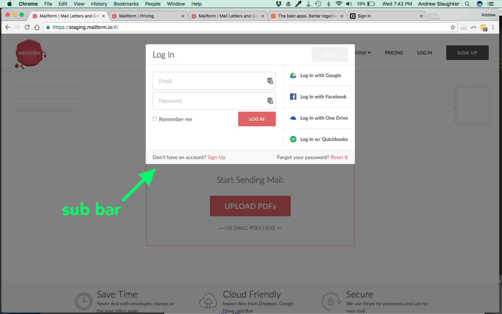
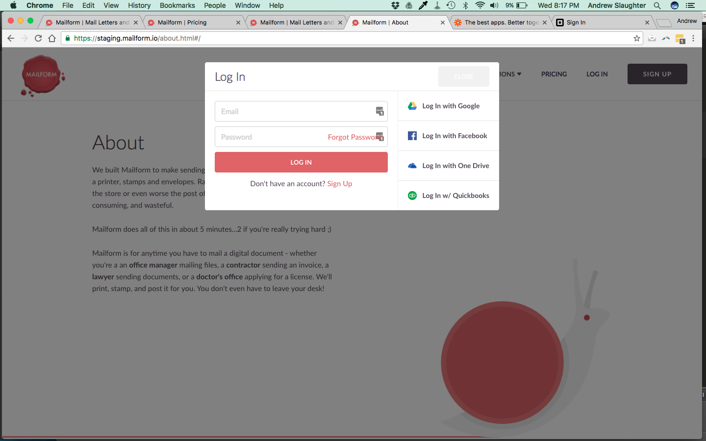
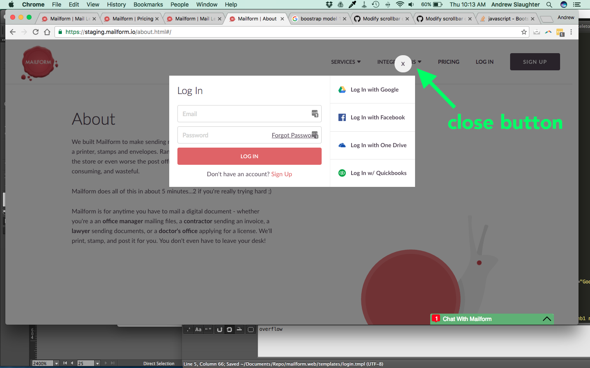
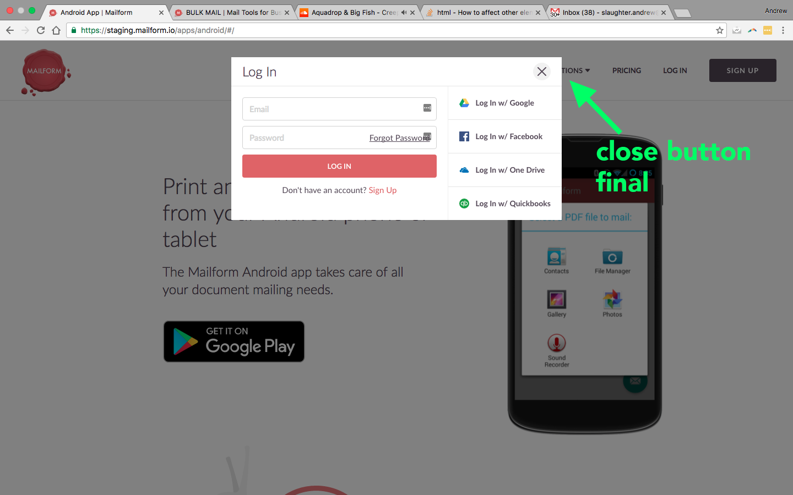
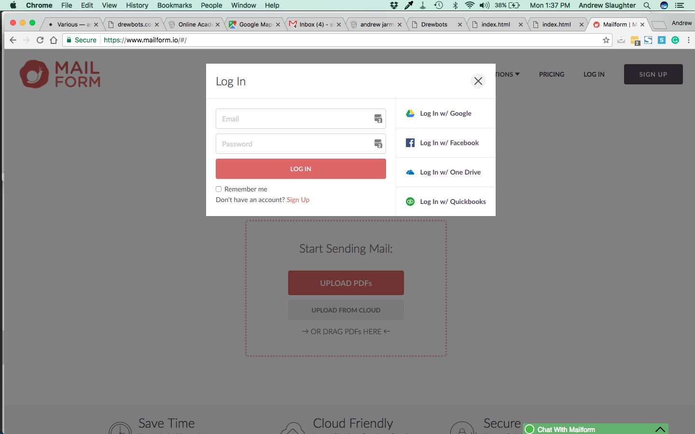
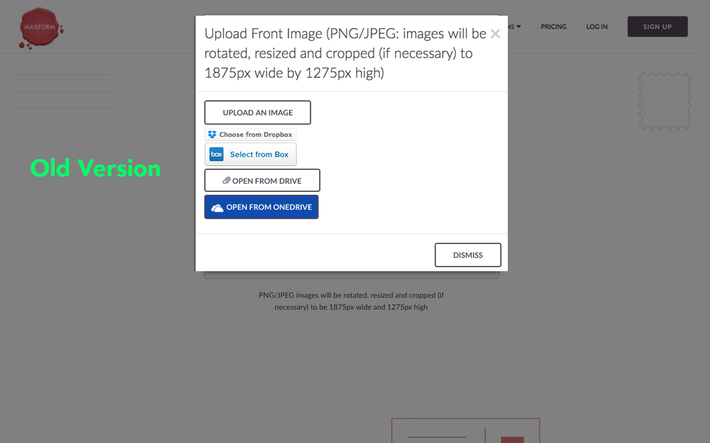
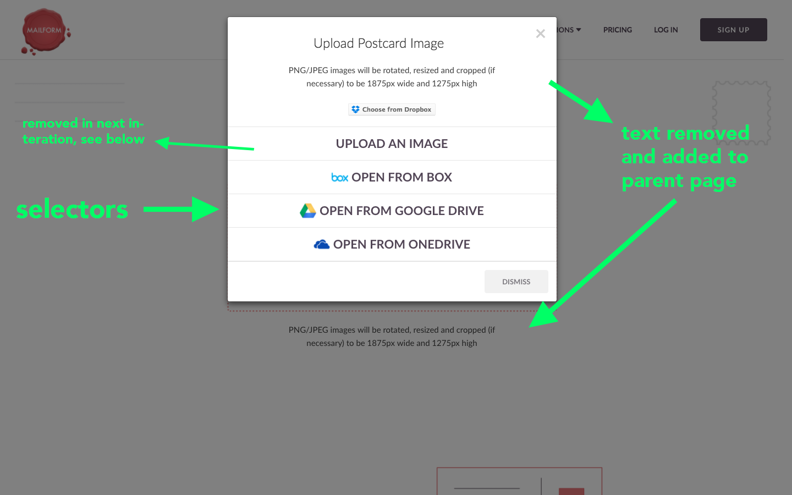
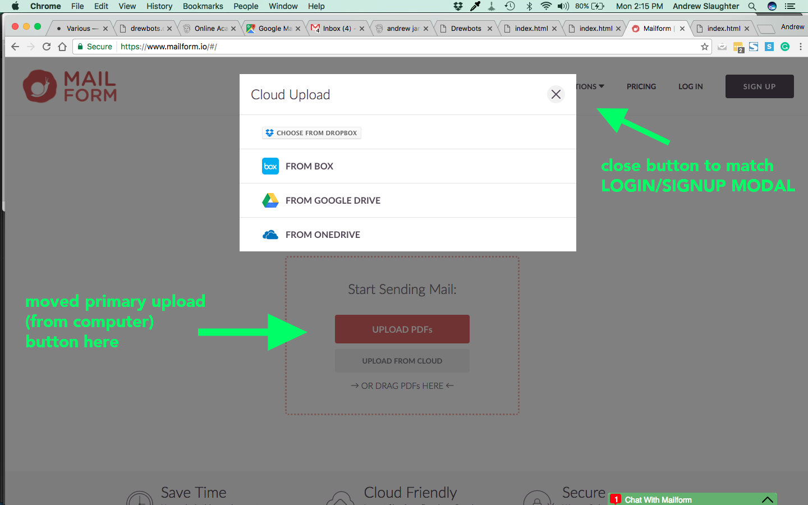

There are two primary modals on the website: one for uploading cloud documents and another for login/signup. I redesigned them both in the same timespace. Arguably, we shuold not be using modals, but that is more of an upstream decision. I simply wanted to make very clean and simple modals, while improving UX and copy.
The login/signup modal used to look like this:
I also used the selectors for Log In options:
Put forms on the left, add a sub bar:
The sub bar felt busy, can we remove the Remember Me checkbox also? (My friends say no, "quickbooks requires it.")
Experiment with close button:
Finalize and make button image an SVG, ftw:
Remove Forget Password (it's is not implemented yet. Feature request made.). Add Remember Me:
The same design is used for modals accessed on the home page and postcard page. It used to look like this:
I thought a lot about what the upload buttons should look like, comparing similar designs on various websites. I decided that more than 3 traditional, rounded-corner buttons stacked or batched in a row feels overwelming. I made them look and act more like selectors or a menu than buttons:
Moved the standard, Upload An Image button to the parent page. So, the big main red button simply asks you to open a file on your computer, no pop-up:
Video showing both modals